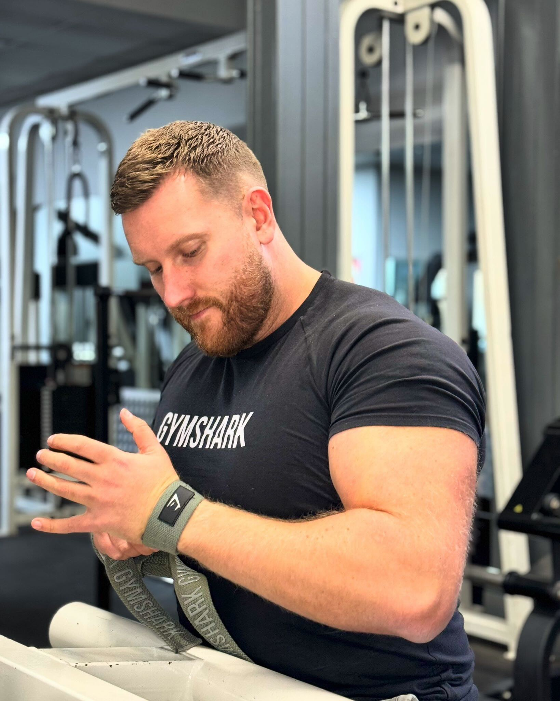
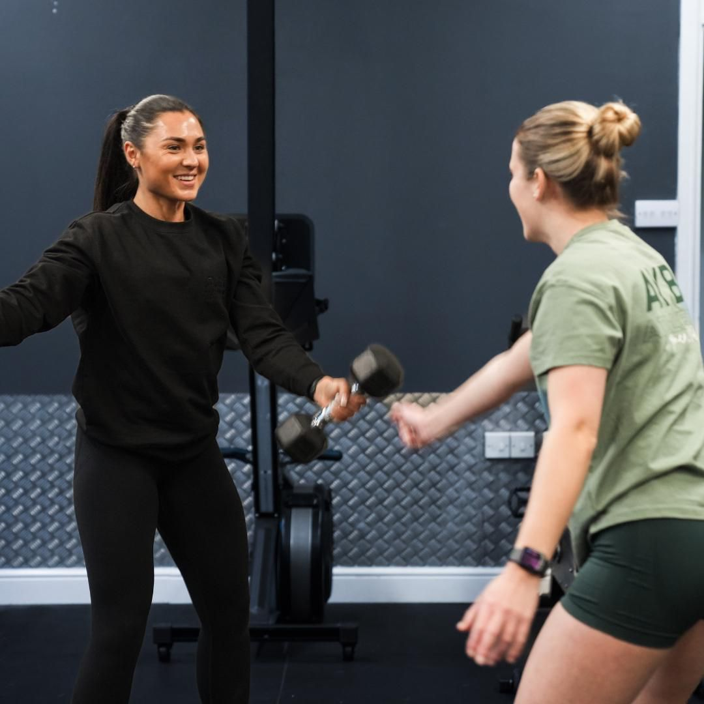
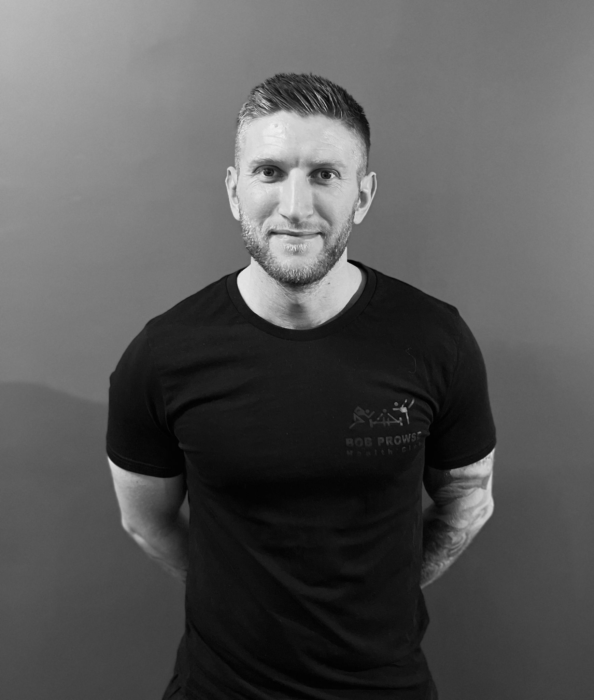
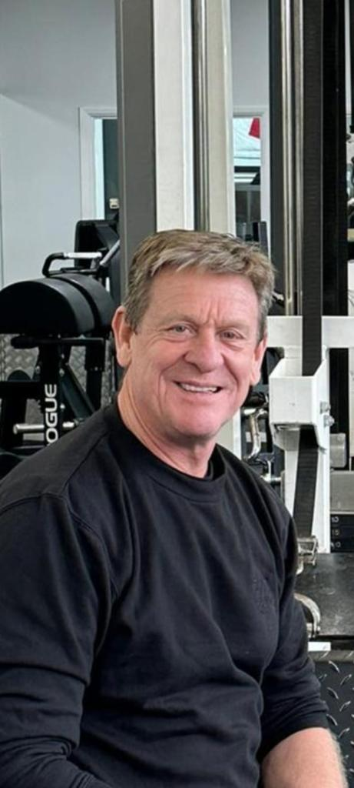

Coaches
Every client is taken through an initial stage of their training programme individually by one of our experienced and enthusiastic instructors. At regular intervals each member will have a private consultation with one of our fully qualified instructors, who will devise an appropriate first training programme.
If you have any queries about training, then please feel free telephone or contact us on the social media streams above.

Paul Slythe Gym Manager / Director
Paul Slythe Qualifications B.A.W.L.A Trained, Lifefit 2000, Advanced Exercise Performance Level 3 UKA track and field, YMCA Level 3, Health and Safety and Appointed person.
About Me… I was lucky enough to represent England and Great Britian in our Athletic Teams from 1993 until 2003. My athletics blessed me with a lot of opportunities like meeting other people from all over the world. I have trained and raced in places I never dreamed I would go, for instance L.A to Kuala Lumpur.
I have competed and won medals at the major athletic events including World Championships, Commonwealth Games and the Europeans.
Now my athletic career is over, I am a partner at Bob Prowse Health Club after I had been working there for 10+ years. We specialise in training the individual as individuals.
Whether you are brand new to the gym environment or a competent athlete, we can help you with Losing weight, Core stability, Functional training, Athletic training or just general fitness and toning.

Simon Mercer
Qualifications:
- 10+ years of gym experience
- BSc Sports Science
- Gym Instruction
- Personal Training
- Crossfit Level 2
- Kettlebells
About me… I had the opportunity to gain work experience with Paul and Ian while studying Sports Science at University back in 2010. Now, a few years later, I have worked my way up to a Senior Gym Instructor position and become a successful Personal Trainer.
I have extensive experience helping people from all areas of fitness, whether it’s for aesthetics, strength & conditioning, or general fitness. My approach focuses not only on training clients hard but also on ensuring they train smart. Although I can cater to clients with different fitness goals, my specialisation lies in strength and hypertrophy training, thanks to my background as a competitive rugby player and powerlifter.
After spending years in powerlifting and enjoying coaching, I successfully created the Bob Prowse Powerlifting Team, which competes frequently. In addition to Personal Training, I offer bespoke online coaching for various goals, including powerlifting, aesthetics, and strength & conditioning.
Working together, I believe I can help you achieve fast results while enjoying the process. Feel free to contact me personally and check out my Instagram @simonmercercoaching.


Ria Dunmill
Level 2 Gym Instructor Level 3 Personal Trainer 6 years instructor experience Competitive bodybuilder
In my years of working in the fitness industry I have found my passion in helping women gain confidence in the gym, moving away from the quick fixes and pyramid schemes to help you fall in love with the process and realise its long term sustainability where in turn the effort will not seem a chore. You might think the gym is not for you but I can guarantee you have yet to find what gives you that buzz and along the way I can help you achieve that goal, whether it be that defined and toned look you are after or to purely focus on building your physical and mental strength.
My focus is weight training as I love how you can transform your body with hard work and consistency. I am personally a competitive bodybuilder at British level in the bikini category and along with 6 years PT experience I have worked with a range of women who want to feel and look strong whilst making it practical and sustainable for all levels of experience.
I am able to tailor programmes with specific goals that are adaptable for your lifestyle. As a mum I understand how to create that balance and make your goals attainable to create that physique you desire.
Watching my clients progress is why I love what I do. Building a strong rapour is key to success and I want you to feel comfortable with me and have full faith that I have your goals at the front!
I offer individual personal training sessions/block bookings, and online coaching to keep you motivated and accountable throughout your fitness journey.
You will find me in the gym Monday through to Saturday, both with clients or putting myself through it. To arrange a chat about your fitness journey why not pop in and we can get a plan of action in place. Riadunmill85@gmail.com 07791 167573

Courtney Welham
Level 2 Gym Instructor Level 3 Personal Trainer
Functional fitness has been the cornerstone of my journey, as my ethos revolves around the principle of training for longevity - ensuring that each session not only boosts performance but also equips you with the strength and stamina for everyday life.
We all have different goals, routines, and lifestyles so I tailor my coaching to ensure it fits with your unique needs. Together, we’ll strive to unlock the best version of yourself, both within and beyond the gym.
Whether you’re aiming to build strength, loose weight or enhance performance - I’m here to guide you every step of the way.
If you’re ready to embark on your fitness journey to unleash your full potential, please contact me on any of the following:
Email: coachcourtswelham@gmail.com Phone: 07572427159 Instagram: @courtney.welham


Charley Ashton
Level 2 Gym Instructor Level 3 Personal Trainer Bootcamp Owner & Instructor Spin Instructor
I spent many years as a competitive swimmer so I understand the dedication, discipline and commitment it takes to earn results.
I have been working as a personal trainer for over 8 years and trained all abilities & ages with their specific goals.
I am owner of 2 local bootcamps with hundreds of members, running military style sessions for groups of over 70 people. I’ve helped support & coach those with little to no experience within fitness to become fitter, stronger, faster & more confident versions of themselves.
For the last 6 years I’ve run a fitness retreat in Sotogrande in Spain where training covers anything from boxing, swimming, cycling & yoga in the sunshine.
I love to train a functional fitness style, from focusing in on form & technique in weight lifting but most love doing tough, challenging, hardcore workouts leaving you feeling that post session buzz & sweat!
As a mum and business owner I understand how life is hectic, busy and demanding but truly believe that an hour of you time can be so beneficial to both your physical & mental health.
My business ethos has always been healthy body & healthy mind.
Happy to meet for a free consultation to discuss your goals
07753 468895 Charley@bcuk.uk @chizzle_a @bootcampukmaidstone


Mitch Mason
Qualifications
L2 gym instructor L3 personal trainer
L1 & L2 CrossFit
L1 & L2 British weightlifting 10yrs experience Early sporting back ground was based around MMA & boxing, I found my true passion was weightlifting which took me to the heights of the English Championships . This in turn made me become a strength & conditioning coach to help give back to the fitness community. For personal training:
Mitchmasonpersonaltrainer@gmail.com

Pete. Trained for over 50 years . Former Maidstone firefighter and 3 time British natural couples champion along wife my wife Odell in the 80s and 3rd in the natural heavyweight class British mens 1991. Several TV appearances in the 90s on the National Lottery assisting mystic meg and in Eastenders beating up Phil Mitchell. Also Mr May in the national firefighters calendar.